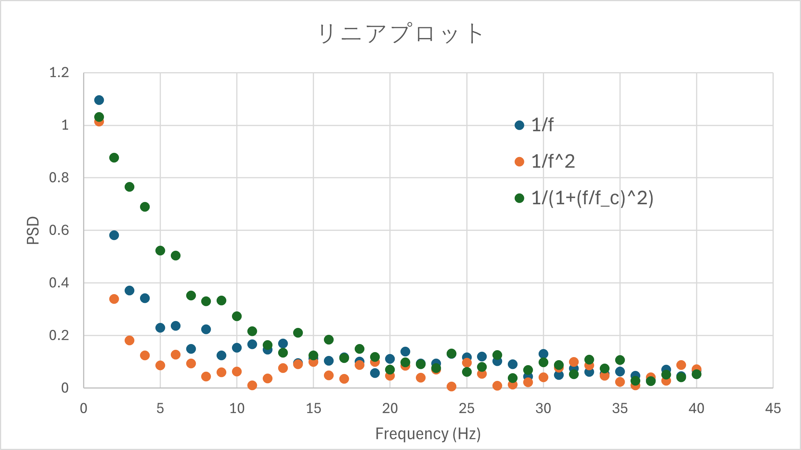
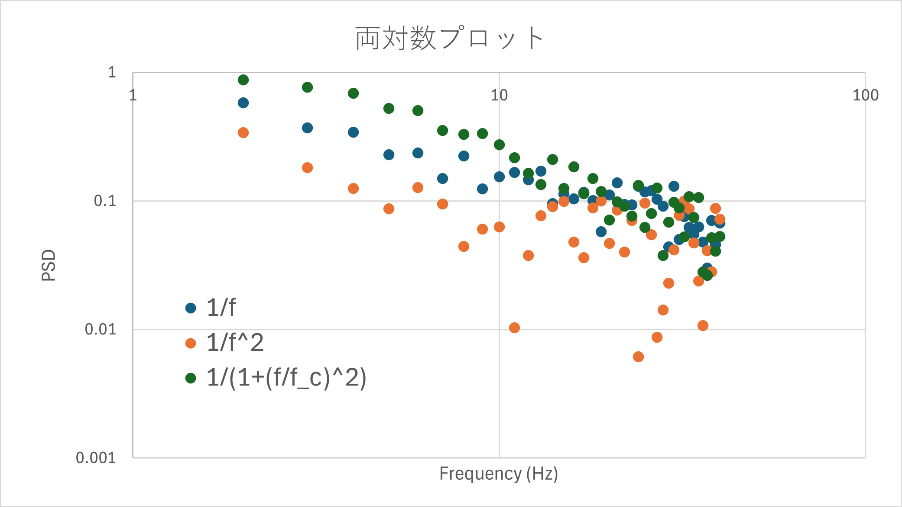

パワースペクトルの実際の作業内容-02
ノイズのノイズ
それは，ノイズ，です．厳密に（？）いうと，ゆらぎ計算における計算結果のばらつきでしょうか？
そこら辺の厳密な数学は，今回の，”作業”，には関係ないので省きます（というか知らない，本を読んで勉強しよう）
たぶん，フーリエ変換そのものが持つノイズ，有限のデータ長によるものなのでしょう．
実際にノイズを加えたシミュレーションを行ってみると，前頁のように，
ピンクノイズ（1/fに比例，昔は1/fノイズと言われ，心地よいゆらぎと言われていましたね，家にある扇風機も1/fゆらぎ機能搭載です）
ブラウニアンノイズ（1/f2に比例しているということです）
ローレンツ型ノイズ(1/(1+(f/fc)2に比例)
にノイズ（ランダム関数０～１，に係数をかけたもの）を足してみると，リニアプロットでは，
などあります．これを単純にエクセルでグラフ化（横軸周波数，縦軸はたぶんパワー密度）してみると

と右のグラフがノイズを加えたものですが，まあばらついているけど，まあそんなもんですね．．．
しかし，同じデータを両対数プロットで示すと，


ともう傾きの議論どころではなくなります．これは当然ながら同じ大きさのゆらぎに対して，縦軸が，１，0.1，0.01とゆらぎの大きさに比べて相対的な値が小さいからです．
このように，両対数プロットでは高周波域（右肩下がりのパワーとして）ではノイズが誇張されてしまい，解析しにくくなる，という問題があります．
これは，後ほど考えていきましょう．